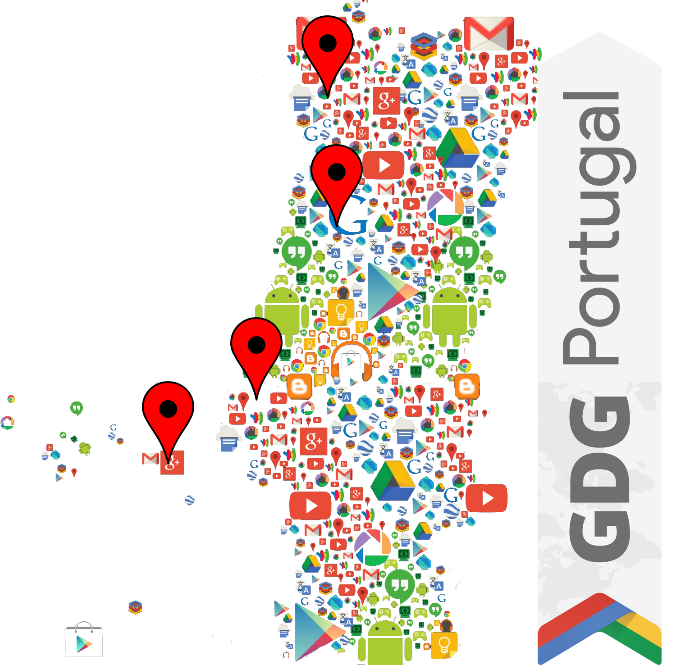
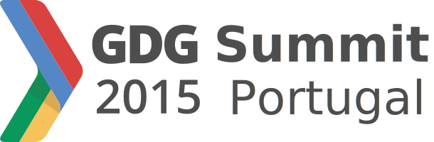

December 12th, 2015
Coimbra, Portugal
Home
Blog
Schedule
Speakers

December 12, Coimbra
{{config.description}}
Register
Some of our speakers
Partners
Blog
Schedule
Speakers
Code of Conduct
Speaker Guidelines
GDG Portugal Summit